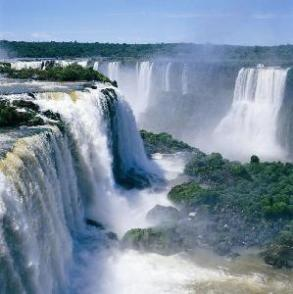

Outros atrativos são as tradicionais festas nas colônias européias, como danças, culinária e todas as formas de manifestações culturais preservadas pelos imigrantes europeus.
A seguir, de forma sintetizada e regionalizada, a apresentação dos pontos turísticos dos três estados que compõe a Região Sul.
 Cataratas do Iguaçu, a maior atração turística do Sul
A Região Sul possui uma variedade de lindas paisagens naturais, além disso, sua composição arquitetônica, herdada dos imigrantes lá estabelecidos, cria uma verdadeira atração turística, uma vez que foge da realidade dos outros estados e regiões.
No entanto, a natureza é o que mais encanta, nesse sentido o sul tem muito a oferecer, a seguir alguns dos pontos turísticos naturais mais conhecidos e visitados.
- Balneário Camboriú
- Parque Nacional de Aparados da Serra
- Ruínas Jesuítico-Guaranis
Paraná
Ilhas dos Currais
Parque Nacional do Superagui
Rio Nhundiaquara
Ilha do Itacolomi
Salto Parati
Igreja Matriz Nossa Senhora do Bom Sucesso
Curitiba, uma cidade planejada.
Cataratas do Iguaçu
Rio Grande do Sul
Cânion do Itaimbenzinho
Cânion Malacara
Cânion Faxinalzinho
Cânion Fortaleza
Parque Nacional da Serra Geral
Porto Alegre, uma cidade moderna.
Praia da Solidão
Praia do Arroio Teixeira
Praia do Balneário Mostardense
Praia Nacional da Lagoa do Peixe
Santa Catarina
Florianópolis
Encantos do Sul Catarinense
Praia do Buraco
Praia de Zimbros
Praia do Canto-Grande
Praia do Esteleiro
Praia de Perequê
Praia do Araçá
Praia do Cardoso
Praia do Mariscal
Morro da Igreja
Rio Sete Quedas
Cascatas Véu da Noiva
Serra do Corvo Branco
Cachoeira do Avencal Pedra Furada.